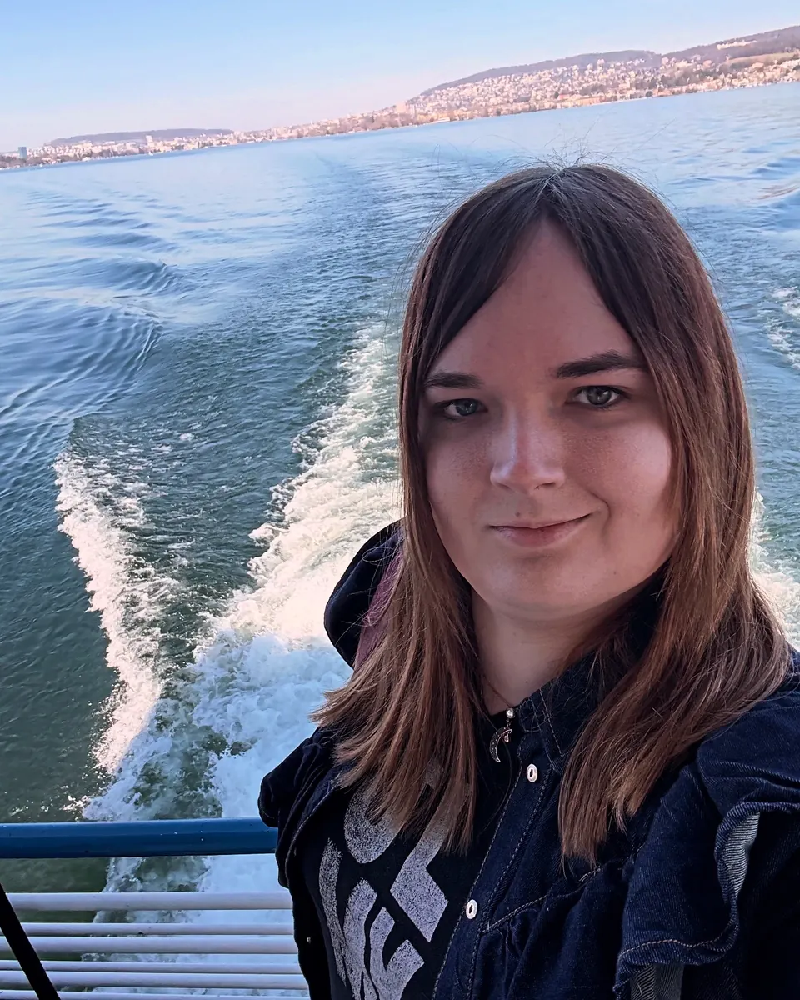
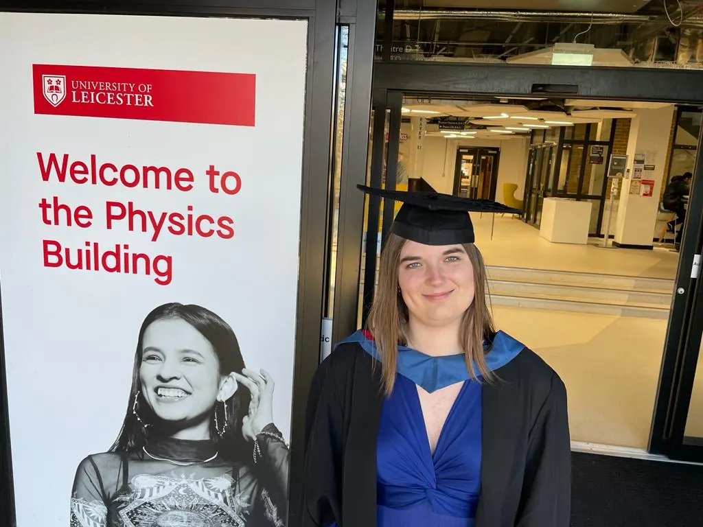
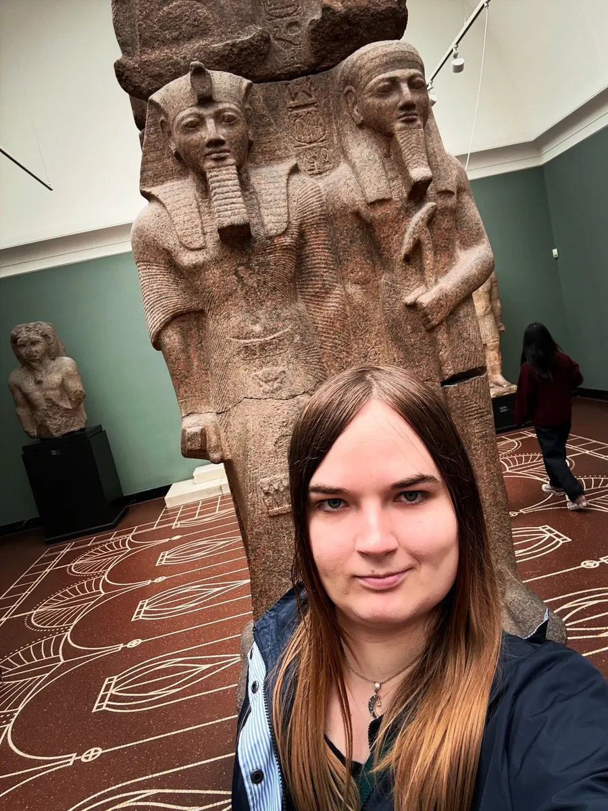
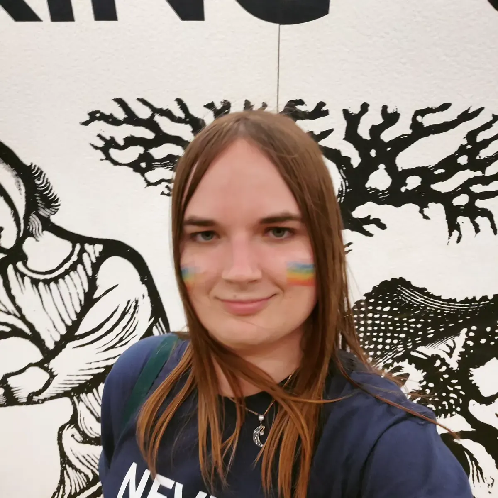
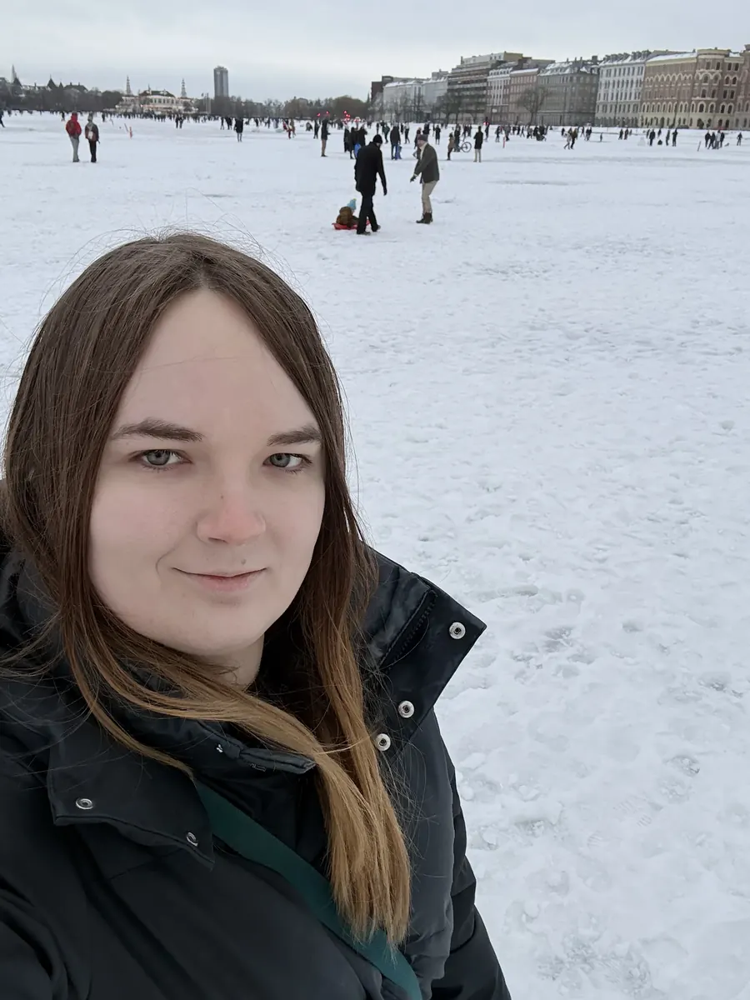

Om mig
Den lange version. Den er stadig ret kort.
Jeg hedder Lena. Jeg voksede op i England, læste fysik på University of Leicester og endte i sikkerhed, fordi jeg altid har været typen, der vil vide, hvordan ting går i stykker.
Under studiet var jeg et år i praktik hos IBM. Efter eksamen startede jeg hos Financial Conduct Authority, Storbritanniens finanstilsyn, hvor jeg byggede detektioner og automatisering. Så kom Microsoft DART og incident response: det opkald, der kommer, når en organisations værste uge lige er begyndt.
I 2025 flyttede jeg til København. Storbritannien var blevet et fjendtligt sted for transkønnede, og Danmark har vist sig at være et sted, hvor jeg føler mig tryg og velkommen. Målt som et incident er det et af de bedre udfald. I dag er jeg senior security engineer i Novonesis’ Cyber Defence Centre.
Når jeg har fri, bygger jeg apps, tager billeder, spiller for meget og ser anime med undertekster, som jeg prøver ikke at læse. Jeg kæmper stadig med stødet og har meninger om kanelsnegle.

Erfaring og uddannelse
- okt. 2025 – nu
Senior Security Engineer
Novonesis · Cyber Defence CentreAnsvarlig for vores Chronicle SOAR-platform og Azure-sikkerheden. Bygger playbooks og detektioner i Sentinel og Defender XDR, leder DFIR- og insider risk-undersøgelser og præsenterer platform- og CSPM-målinger for CIO og CISO.
- mar. 2025 – okt. 2025
Security Researcher (DART)
MicrosoftIncident response under aktive angreb verden over: telemetri, hærdning af identitet og cloud, forensiske artefakter til threat hunters og KQL-detektioner, mens hændelsen stadig stod på. Blandt andet sager med kendte trusselsaktører som Scattered Spider.
- okt. 2022 – feb. 2025
Cyber Security Engineer, Threat Detection & Response
Financial Conduct AuthorityOnboardede kritiske logkilder til Sentinel, skrev KQL-detektioner og hunting-forespørgsler, byggede SOAR-automatisering og præsenterede dashboards for ledelsen op til CISO. Tre måneder udstationeret i CSIRT’en.
- aug. 2020 – aug. 2021
Level 2 Support, Tools and Workload Manager
IBM · praktikårKoordinerede supportsager for et team på over ti ingeniører og reproducerede kundefejl i et RHEL-baseret cloudmiljø.
- 2017 – 2022
BSc Physics, First Class Honours
University of LeicesterMedicinsk fysik, anvendt moderne fysik og partikelfysik. Mit afsluttende projekt brugte satellitdata fra ESA og NASA til at undersøge, hvordan klimaforandringer påvirker plantesundheden i Amazonas. Genoplivede universitetets Anime Society efter COVID.
Bevis på, at jeg findes




Kort fortalt
Sprog
- Engelskmodersmål
- Dansknæsten flydende
- JapanskB2
- FranskB1/B2
Værktøjskassen
Sentinel, Defender XDR, Chronicle SOAR, Entra ID, Purview, KQL, Python, PowerShell, KAPE, Volatility. Certificeret: SC-200.
Lige nu
- Byggerden her side, så DANSK
- Spiller[udfyld]
- Ser[udfyld]
Fritid
Spil, anime, fotografi og et løbende feltstudie i Københavns kanelsnegle. Resultaterne er fortrolige.
Opdateret november 2026.
Sig hej
Der er ingen kontaktformular, så der er intet at spamme eller hacke. Skriv bare en mail.
hej@lenagibson.eu